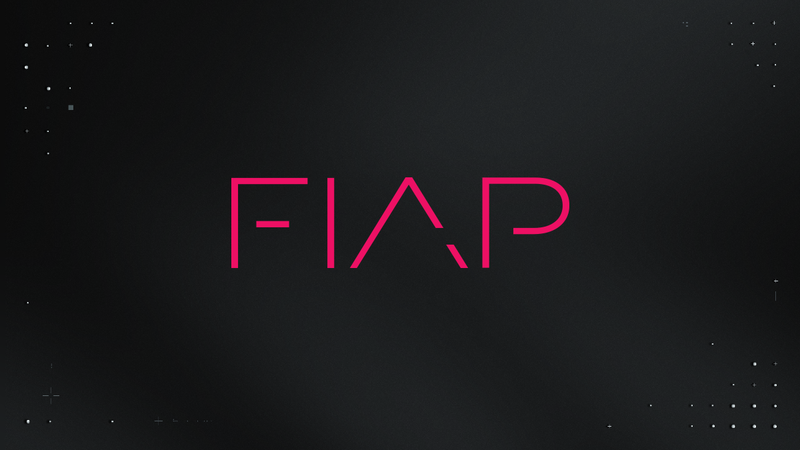

Sobre o Nosso Projeto
Conheça a essência da nossa solução para a Turma do Bem.
💡 A Ideia
A ideia por trás deste projeto nasceu da observação de que o primeiro contato entre o paciente e o consultório odontológico pode ser demorado e repetitivo. Buscamos uma forma de agilizar essa etapa, garantindo que o dentista receba as informações essenciais do paciente de forma clara e organizada antes mesmo da primeira consulta, otimizando o tempo de todos e melhorando a qualidade do atendimento inicial.
🚀 O Projeto
Nosso projeto é um web app de gestão e triagem de pacientes. Através de um chatbot interativo, o sistema realiza o primeiro atendimento, coletando dados cadastrais e o histórico inicial do paciente. Essas informações são então processadas e armazenadas de forma segura, sendo apresentadas ao dentista em um painel de controle intuitivo, que facilita o acesso rápido a todo o histórico do cliente e otimiza o fluxo de trabalho da clínica.
Tecnologias Utilizadas
Front-End
HTML, CSS e JavaScript para criar uma interface de usuário interativa e amigável.
Back-End
Java e Python para construir a lógica do servidor, processamento de dados e regras de negócio.
Banco de Dados
Um sistema de banco de dados relacional para garantir a segurança e a integridade das informações dos pacientes.
Inteligência Artificial
Um chatbot para a automação da triagem inicial.
Nosso Roadmap
Definição do escopo, planejamento, e desenvolvimento da estrutura base do front-end com as páginas estáticas.
Foco no desenvolvimento do back-end, modelagem do banco de dados e criação das principais regras de negócio.
Implementação do chatbot e início da integração entre o front-end e o back-end para a troca de dados.
Integração final de todas as tecnologias, fase de testes, refatoração de código e preparação da solução para a apresentação final.
